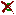

|  |
The Remove Customizations button allows you to clear all
customizations for the selected class form. This will return the form to
the default layout, which has the following characteristics:
- Widgets appear in an order based on size, type, and label.
- Each widget is a standard type, based on the slot's type and cardinality.
- Each widget is a standard size for that widget type.
In addition, when you remove customizations, any labels you have
changed will be returned to their default labels, and any hidden widgets
will be displayed. However, if you have changed the browser key, that will
not be returned to the default. |
 |
The Default Layout button will return the selected class
form to the default layout, based on the current information. If you have renamed any of the
widget labels, or hidden any widgets, those changes will be retained. Any
changes to the browser key will also be retained. |
|
The Layout Like Parent button will use the form layout
designed for the superclass of the selected class. Any slots not present
in the superclass will be placed below the superclass form in the default
layout. Note that, if a class has more than one superclass, Layout Like
Parent uses the layout of the superclass that is represented by where you
are in the hierarchy. That is, if you highlight the instance of Editor
that is under Author and click Layout Like Parent, Protégé-2000 will
base the layout on the form for Author. If you highlight the instance of
Editor that is under Employee and click Layout Like Parent, Protégé-2000
will base the layout on the form for Employee. |
|
The Layout Like Form button allows you to choose a form from
a dialog box of all forms and use that as a basis for your layout. In this
case, any widgets the two forms have in common are laid out in the same
way. Any widgets that appear in your current form that do not appear in
the form you choose as a base are displayed in a standard layout below the
chosen form. Any widgets that appear in the base form that are not in the
current form appear as blank space in the new form. |
You can also customize a form in a number of ways, by customizing
global properties as well as individual widgets on the form. See the Forms Table of Contents
for more information.